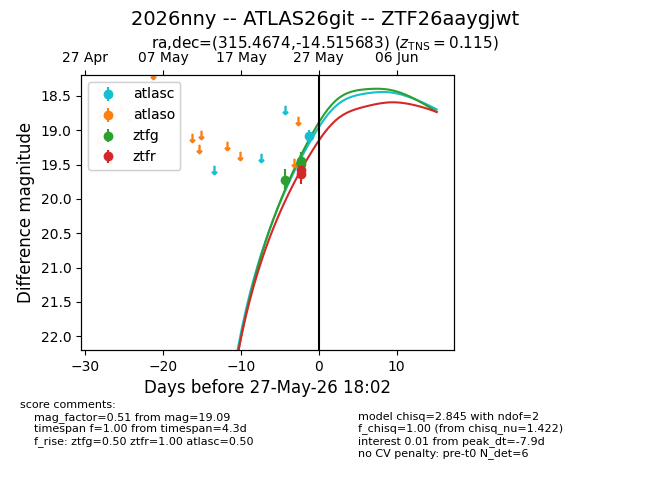
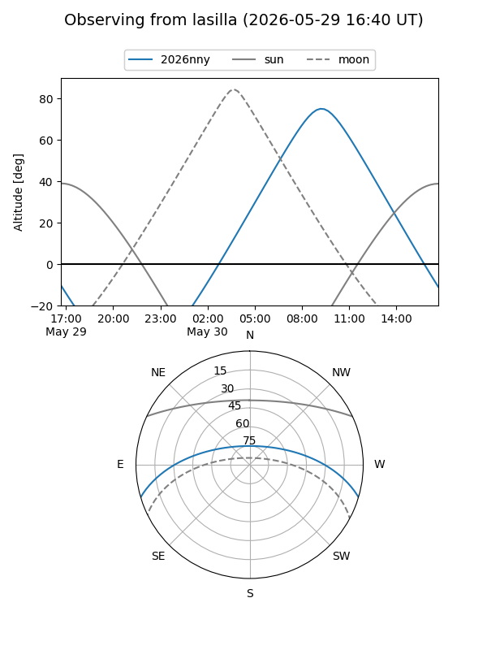
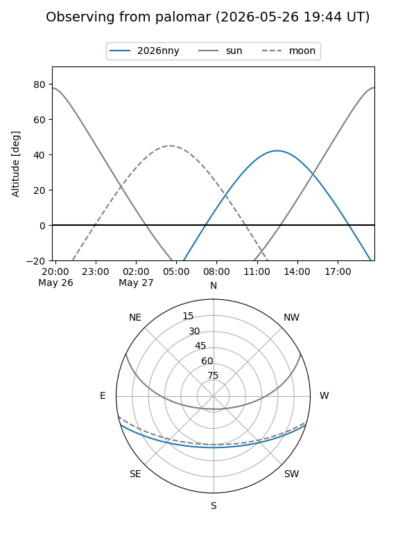
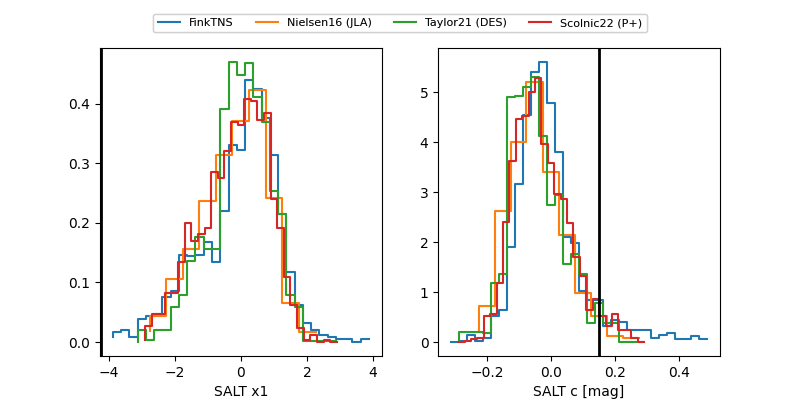

2026nny
Target 2026nny at 2026-05-27 18:03
Aliases and brokers:
lsst-FINK: link
lsst-Lasair: link
lsst-ALeRCE: link
ztf-FINK: link
ztf-Lasair: link
ztf-ALeRCE: link
TNS: link
YSE: link
alt names
ZTF26aaygjwt (ztf,fink_ztf)
2026nny (tns,yse)
ATLAS26git (atlas)
Coordinates:
equatorial (ra, dec) = 315.4674,-14.51568
equatorial (HMS+DMS) = 21:01:52.17,-14:30:56.46
galactic (l, b) = (33.9723,-35.35098)
Flags:
confirmed ia: True
TNS confirmed: SN Ia
TNS redshift: 0.115
Photometry:
last atlasc=19.09, ztfg=19.48, ztfr=19.58
1 atlasc, 3 ztfg, 2 ztfr detections
Lightcurve

Visibility


Additional plots
